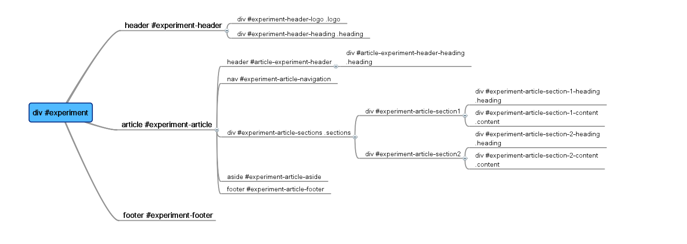
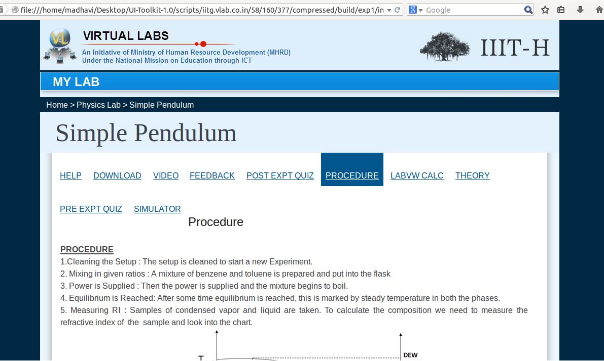

UI 1.0 Toolkit
Table of Contents
1 Introduction to UI Toolkit
The UI Toolkit consists of the Virtual Labs User Interface framework. Apart from the Virtual Labs UI 1.0 template, the toolkit also contains helper scripts that extract the content of labs hosted in Amrita UI format to UI 1.0 framework. The objective of using UI Toolkit 1.0 is to standardize the formats of all labs according to the Virtual-labs UI 1.0 framework.
Therefore, UI Toolkit 1.0 is a compilation of software tools used to build software programs that can run on the web. The toolkit is browser-compatible as it is based on Web Standards such as HTML5, CSS and Java Script.The Virtual Labs UI 1.0 framework provides a set of CSS classes and/or Java script functions that:
- Simplify the development of the layout
- Provide an attractive look and feel
- Provide consistent results across browsers with a lot of useful components.
The toolkit uses html5/css because the objective is to build a reusable design framework for all the labs.
1.1 What is the purpose of the UI Toolkit?
- Unified look and feel: The UI Toolkit offers a uniform user interface for authoring and interacting with the virtual labs. It also provides the labs a simple and uniform web interface and a homogeneous hosting framework.
- Coding standards: The Toolkit ensures that lab developers follow good programming practices to make the code of the labs efficient and readable.
- Upgrading widgets and components: The UI 1.0 template makes it easy for lab developers to modify and update widgets and/or components.
- Provision for better versions of template: In future, if advanced versions of the UI template are created, the lab developers can transfer the lab content automatically as per the newer versions.
2 Structure of the Lab
Below are the instructions for a lab developer to structure the lab as per UI template 1.0.
a) As a lab developer, after you have the content (theory, procedures, experiment, simulations, quiz, images, videos etc.) of your lab ready, you need to understand the structure of the lab according to UI template 1.0.

The structure of the lab is displayed in the diagram above.
b) The ui/ directory has src and scripts directory inside it.
The ui/ directory has the following file structure:
ui/src/lab/
All the source files of the lab are in this location. The index.html and default.html files are available as read-only because these files need not be edited. If you want to edit the html pages, you should edit only the content.html file in ui/src/lab/ and the ui/src/lab/exp1/ directory.
c) While adding new experiments, make sure you create new directories following the same structure under ui/src/lab/"EXPERIMENT-ID" and change the content.html in the same directory. Do not edit the files index.html and default.html in the same directory. The ui/src/lab directory also contains js, images, and css directories. These directories hold your own custom files.
ui/src/lib/
All the library files (like MathJax, jQuery, modernizr) are in this directory.
ui/src/themes/
d) You need to choose the blue-icon (uses the iitb style, which uses icons for sections) to design the theme of the lab. The current release also has a maroon-grid (which uses iiith style, which does not display icons). Of course, you are free to design your own theme, and place it in the themes directory.
ui/src/makefile
This file is used for building a release.
ui/scripts
The scripts folder should contain json file (lab descriptor), shell scripts, dependencies file.

- Build: Build Script runs the makefile and copies the build folder to local host. The script is invoked by initialize script.
- Dependencies: This file contains all the server-side dependencies of the lab as dependencies.txt
- Initialize: The initialize script creates the initial environment for the lab by installing the server side dependencies for the lab and invokes the build script. To use initialize script, the lab developer must run the command ??.initialize scripts/dependencies.txt.?? initialize script takes dependencies.txt as an argument and installs the packages mentioned in the dependencies.txt file.
- Backup: Stores the backup of the database used by the lab.
- Restore: The Restore script restores the backup of the database used by the lab.
- Shutdown: The shutdown script stops all the services on the container required to run the lab for the safe dissembling of the lab.
- Startup: The startup script starts all the services on the container required to run the lab.
- labspec.json: This is an automated script for building the lab on container automatically.
3 The UI Template structure
All the labs should follow the general structure of the template.

The template has three sections: Header, Article and Footer.
Header contains the logo and heading of the page. Article contains the content of the page. It can be further divided into sub-sections such as header, footer, content etc. Footer contains the licensing details. The lab developer may add the logo of the institute here. Header and Footer remains the same for all the webpages.
4 How to use the template?
There are two ways to convert a lab based on the cases below
4.1 Case 1: Unstructured labs
Editing the file content.html placed within lab folder
This template features a demo of a science lab with a sample "simple pendulum" experiment. The following section will help the lab developer configure this template as per his/her lab experiments.
- Mention the lab name under header and place the labs content under
article followed by sections and order the articles accordingly.
- List out the experiments in content.html.
This is how the html page of the lab should be structured and we recommend to use these id's for the lab.
The ui/src/lab/ directory contains three files:
- index.html
- default.html
- content.html

Editing content.html placed within each experiment folder
The same structure has been followed inside the ui/src/lab/"EXPERIMENT_ID" directory. The description and the read-write permits for those file are tabulated as follows :
| file | permissions | description |
|---|---|---|
| index.html | read-only | home-page |
| default.html | read-only | default-content |
| content.html | read-write | editable-content |

This is how the html page of the experiment should be structured and we recommend to use these ids for the experiments.
4.1.1 Procedure for using scripts
- After the content is added, edit the "dependencies.txt" file and list out all the dependencies of the lab.
- Based on the operating system, scripts will differ. Therefore, check the scripts being used. If the operating system used is "CentOS", use "centos-template" scripts otherwise use "ubuntu-template" scripts.
- Next, copy the scripts from the desired template (i.e. ubuntu-template or centos-template) and paste inside the template folder.
- Now open the terminal and change the directory to template and then scripts.
-
Run the following commands
chmod 777 initialise.sh ./initialise.sh
This script will automatically installs all the dependencies and will run the "make" file in order to generate a build folder.
Note: if you come across any error while running the script, you need to login as root user and follow the same procedure.
sudo su or su -
4.2 Case 2: Labs hosted with Collaborator Framework (Amrita Format)
To convert labs from the Collaborative framework (Amrita format) to UI 1.0, we have helper scripts in the UI toolkit that automates the process to a large extent, however, there are some changes that need to be done manually.
Below is the framework of labs in Collaborative (Amrita) format.

4.2.1 Necessary instructions for using scripts
For example, let us chose a lab at random as below: (http://iitkgp.vlab.co.in/?sub=39&brch=124&sim=922&cnt=1)
The breakup of the url is as per the following scheme:
| url format | example |
|---|---|
| sub=39(subjects or domains) | Electrical Engineering |
| brch=124(branch or lab) | Analog Signals, Network and Measurement Laboratory |
| sim=922(experiment) | Verification of Superposition Theorem |
| cnt=1(the breakup of pages under each experiment) | Introduction, Aim, Theory etc |
Now the structure of the lab is analyzed and the script breaks up the url accordingly and creates the folders recursively in an organized format.
- scrapper.py
scrapper.py is a python based script to transfer the content under one lab-experiment in an automated way to the requisite UI format, which is the new Blue-icon theme format.
A Python library called "Beautiful Soup" designed to parse xml, html5 files and tree traversals has been used here to parse the content of each lab-experiment's html files. The parsed content is mapped to the Blue-icon theme format and copied into the "content.html" using python commands.
Ref: http://www.crummy.com/software/BeautifulSoup/
- link_changer.sh
link_changer.sh is also a shell script to link the images downloaded in the userfiles folder to contents.html of the lab-experiments mapped using the former scheme.
Here the script replaces the path of the images inside each content.html file for all experiments in the lab with the appropriate and desired path of the new directory after the mapping is done.
- all.sh
This script file automatically runs both scrapper.py and link_changer.sh. It also builds the lab automatically.
Note: Follow the same procedure for every experiment. After converting all the experiments, rename the "exp1" folder experiment-wise such as: exp1, exp2, exp3 so on and place them inside lab folder.
4.2.2 Procedure for using scripts
The following instructions will help port content from the Collaborative format (Amrita format) theme to Blue-icon theme.
- Check out the scripts from github
Check out the lik (lab integration kit) from githubgit clone https://github.com/vlead/ui-1.0-tool-kit.git
Find the scripts from following path:
Go to: ui-1.0-tool-kit->scripts/
- Download and store the content
Create a folder called "map"> mkdir map
- Move into the folder map
> cd map
- Getting the content from desired url
Run the wget command under the some directory.> wget -r -e robots=off http://iitkgp.vlabs.co.in
4.2.3 Organize the downloaded content
Run the organise .sh file and prior to that give it execute permission.
> chmod 777 organise.sh > ./organize.sh
4.2.4 Execute the script to transfer content for a lab
For each lab, you need to run the code manually for each page and more precisely for all the "cnt" number under each experiment (or simulation). The command to do it are given in following subsections: Go inside the subject->branch->lab->experiment use cd command followed by path name.
4.2.5 Transfer the content into blue-icon theme format
"scrapper.py" is used to transfer the content from the Collaborative framework (Amrita's format) to UI 1.0. "link_changer.sh" is used to update the links to the images inside the experiment. "make" is used to build the lab.
run the following command:
> ./all.py
Note: if any error occurs while running this script then log in as a root user and follow the same procedure.
sudo su or su -
Note: all.py will automatically run "scrapper.py", "link_changer.sh" and "make". It will open in the browser with Simple pendulum sample experiment. So, click on that link. The template should be ready with the content added, but the images at each tab may be missing. It may be like this:

Note: In such a case, copy the images from the /template/src/lab/images and place them in the same path that the experiment follows.
4.2.6 Observe the UI transfer(mapping)
This is how the lab is structured after conversion.

Date: [2014-09-18 Thursday]
HTML generated by org-mode 6.33x in emacs 23